پودمان ۳: صفحات وب تعاملی
صفحه، رویداد و اعتبار فرم صفحه ۲۲۵
کنجکاوی
تحقیق کنید چرا استفاده از توابع prompt() و confirm() برای عملیات ورودی میتواند باعث مختل شدن تجربه کاربری شود؟
کلاسها و اشیا
در زبانهای برنامهنویسی، کلاس به معنای الگویی برای ایجاد اشیا است. یک کلاس حاوی مجموعهای از ویژگیها و متدهاست. شیئی که از روی یک کلاس تعریف میشود، دارای ویژگیها و متدهای تعریف شده در آن کلاس خواهد بود.
بیشتر بدانید
در مثال زیر یک کلاس با عنوان Person ایجاد شده است که حاوی ویژگیهای name age
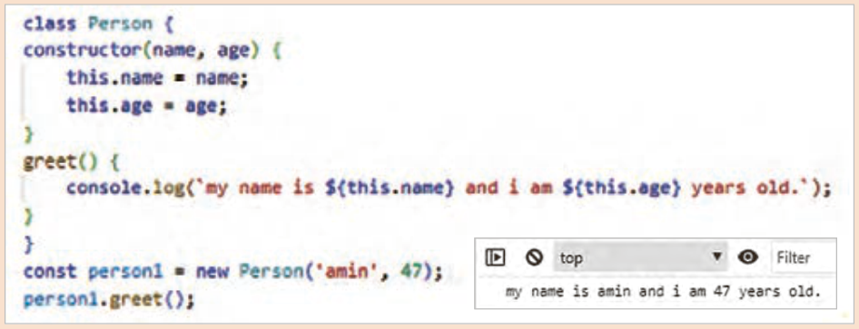
متد constructor برای تعریف و مقداردهی ویژگیهای یک شیء استفاده میشود. زمانی که یک شیء جدید از یک کلاس ایجاد میشود، متد constructor به طور خودکار فراخوانی شده و مقادیر اولیه را به ویژگیهای آن شیء اختصاص میدهد. در مثال فوق متد constructor دو پارامتر name و age را میپذیرد و آنها را به ویژگیهای متناظر در شیء نسبت میدهد.
کلاس person دارای یک متد بنام greet
متغیر person1 یک شیء از نوع کلاس person است که مقدار ویژگیهای آن برابر amin و 47 است. این مثال نشان میدهد که برای ایجاد یک شیء از روی یک کلاس باید از کلمه کلیدی new person دارای متدی بنام greet است، شیء person1 نیز امکان استفاده از این متد را دارد. متد greet باعث نمایش عبارت "My name is amin and I am 47 years old" در کنسول خواهد شد.
ایجاد کلاس و شیء
فایل جدیدی با نام object.html ایجاد کنید و درون آن کلاس جدیدی با نام Car با ویژگیهای auto_maker، model و year ایجاد کنید.
یک متد با نام print_Details برای چاپ ویژگیهای خودرو بنویسید. نحوه چاپ بهصورت زیر باشد: Auto maker: Toyota, Model: Camry, Year: 2020
صفحه ۲۲۶
بیشتر بدانید (ادامه)
یک شیء با مقادیر Toyota ، Camry ، 2020 ایجاد کنید و متد print_details را برای شیء جدید مورد استفاده قرار دهید.
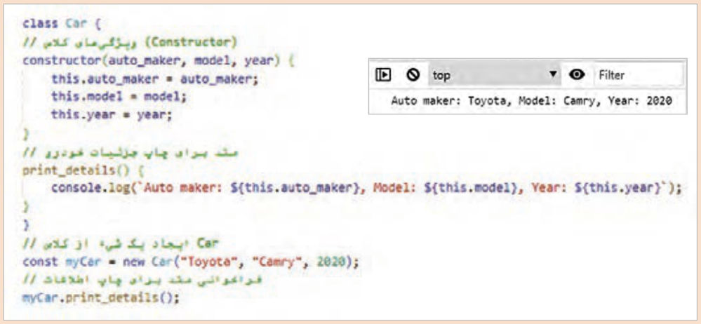
دسترسی به عناصر DOM
جاوااسکریپت برای انجام عملیات مختلف بر روی عناصر صفحه، به دسترسی به آن عناصر نیاز دارد. به همین دلیل جاوااسکریپت دارای متدهایی برای دسترسی به عناصر است. بهعنوان مثال برای دسترسی به عنصری با شناسه demo از متد getElementById بهشکل زیر استفاده میشود:
در این اسکریپت مقدار جدید عنصر para توسط ویژگی textContent مشخص شده است.
برای انتخاب و دسترسی به هر یک از عناصر صفحه روشهای مختلفی وجود دارد که در این بخش به آنها اشاره میشود.
انتخاب براساس ID : عناصر صفحه براساس شناسه (id ) آنها انتخاب میشوند.
انتخاب براساس کلاس : مجموعهای از عناصر با نام کلاس مشخص انتخاب میشوند.
انتخاب براساس نام تگ : مجموعهای از عناصر با نام تگ یکسان انتخاب میشوند.
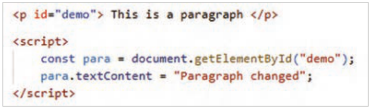
شکل ۱۲ 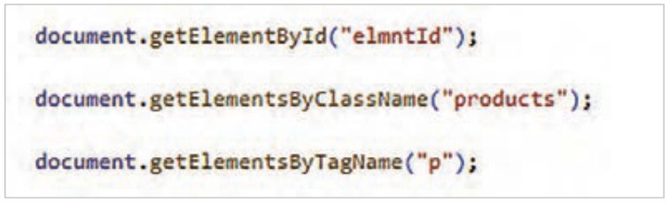
شکل ۱۳ صفحه ۲۲۷
کنجکاوی
برای مطالعه درباره سایر متدهای دسترسی به عناصر، عبارت «how to get elements by JavaScript » را در گوگل جستوجو کنید و از لیست نتایج سایت w3schools.com را باز کنید.
در ادامه تمرینهایی برای کار روی عناصر مختلف صفحه توسط جاوااسکریپت ارائه میگردد.
کار کارگاهی
مدیریت عناصر صفحه توسط جاوااسکریپت
دسترسی به محتوای عناصر، تغییر محتوا و سبک عناصر : اسکریپتی بنویسید که محتوا و سبک یک دکمه و عنصر متنی را توسط جاوااسکریپت تغییر دهد. این تغییرات باید در هنگام کلیک روی دکمه رخ دهد.
یک فایل به نام product.html ایجاد کنید و کد زیر را در بخش <body> وارد کنید:
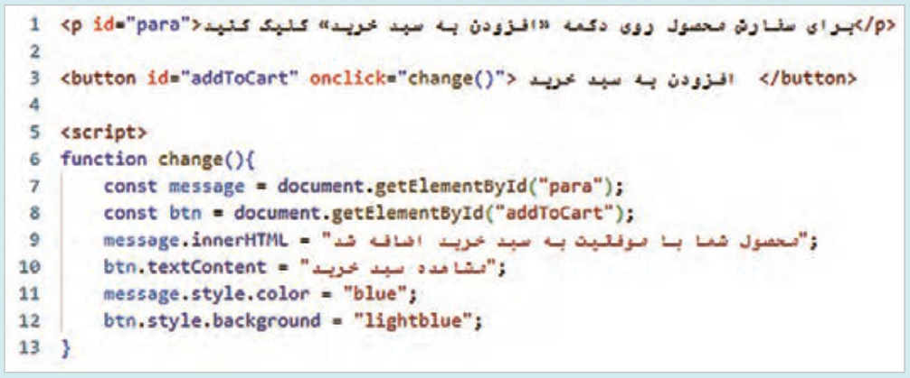
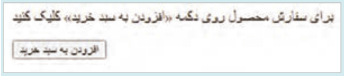
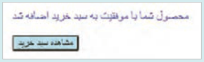
در خطوط 6 تا 13 اسکریپت فوق یک تابع با نام change() تعریف شده است که دسترسی به عناصر addToCart و para و سپس تغییر محتوا و سبک آنها را انجام میدهد. تابع change() هنگام کلیک روی دکمه فراخوانی میشود.
در خطوط 7 و 8 دسترسی به عناصر پاراگراف و دکمه انجام شده است. در خطوط 9 و 10 تغییر محتوای عناصر پاراگراف و دکمه، توسط ویژگیهای innerHTML و textContent صورت گرفته است. در خطوط 11 و 12 تغییر سبک عناصر توسط ویژگی style انجام شده است. فایل را ذخیره کنید و نتیجه را در مرورگر بررسی کنید.
بیشتر بدانید
دسترسی به عناصر و تغییر ویژگی آنها : اسکریپتی بنویسید که ویژگی src یک تصویر را هنگام قرار گرفتن ماوس روی آن تغییر دهد.
صفحه ۲۲۸
بیشتر بدانید (ادامه)
در فایل products.html تصویر یک محصول را به قسمت <body> اضافه کنید. سپس اسکریپت زیر را برای تغییر مقدار ویژگی src تصویر استفاده کنید.
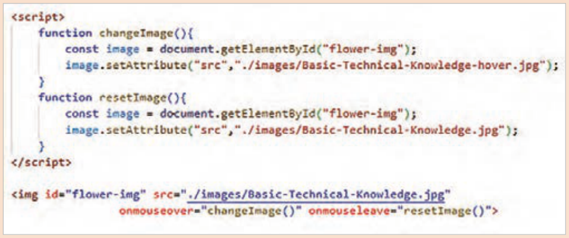
فایل را ذخیره کنید و نتیجه را در مرورگر بررسی کنید.
با انتقال اشارهگر ماوس روی تصویر، رویداد onmouseover فعال شده و در نتیجه تابع changeImage() برای تغییر تصویر فراخوانی میشود. با کنار رفتن ماوس از روی تصویر، رویداد onmouseleave فعال شده و بنابراین تابع resetImage() فراخوانی میشود. این تابع تصویر اولیه را برمیگرداند.
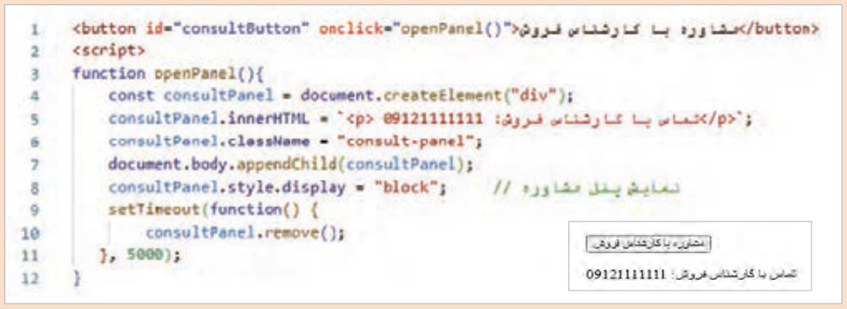
در هر دو تابع فوق از متد setAttribute() برای تغییر تصویر استفاده شده است.
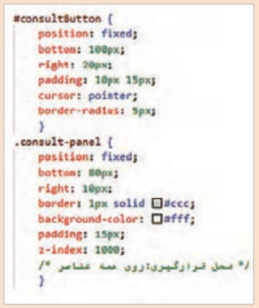
اضافه و حذف کردن عناصر توسط جاوااسکریپت : اسکریپتی بنویسید که با کلیک روی یک دکمه با عنوان مشاوره، پانلی را برای راهنمایی کاربر به صفحه اضافه کند و بعد از چند ثانیه آن را ببندید.
یک فایل جدید با نام open-panel.html ایجاد کنید و اسکریپت را طبق شکل روبهرو درون آن بنویسید.
صفحه ۲۲۹
بیشتر بدانید (ادامه)
استایل عناصر را به بخش <head> اضافه کنید. سپس فایل را ذخیره کنید و نتیجه را در مرورگر مشاهده کنید.
با کلیک روی دکمه «مشاوره با کارشناس فروش» تابع openPanel() فراخوانی میشود. این تابع در خط 3 تا 12 نوشته شده است.
در خط 4 یک عنصر div جدید توسط متد createElement ایجاد میشود.
در خط 5 محتوای عنصر توسط ویژگی InnerHTML تعیین میگردد.
عنصر جدید نیازمند تعیین استایل است. این استایل توسط کلاس consultpanel مشخص میشود.
در خط 6 نام کلاس عنصر جدید تعیین میشود.
در خط 7 عنصر جدید توسط متد appendChild به صفحه اضافه میگردد.
پانل مشاوره (عنصر div ) بهصورت پیشفرض مخفی است. در خط 8 وضعیت نمایش پانل به block تغییر میکند.
در خط 9 متد setTimeout برای تعیین زمان حذف پانل مشاوره استفاده میشود.
در خط 9 پانل مشاوره بعد از 5 ثانیه توسط متد remove حذف میشود.
دسترسی به اطلاعات فرم و اعتبارسنجی دادههای کاربر : یک اسکریپت ساده برای اعتبارسنجی دادههای ورودی کاربر بنویسید. در این اعتبارسنجی پر بودن فیلدهای متنی را بررسی کنید، بهطوریکه اگر یک فیلد متنی خالی باشد، پیغام هشداری را نمایش میدهد.
یک فایل بهنام sign-in.html ایجاد کنید و کد شکل زیر را درون آن وارد کنید:
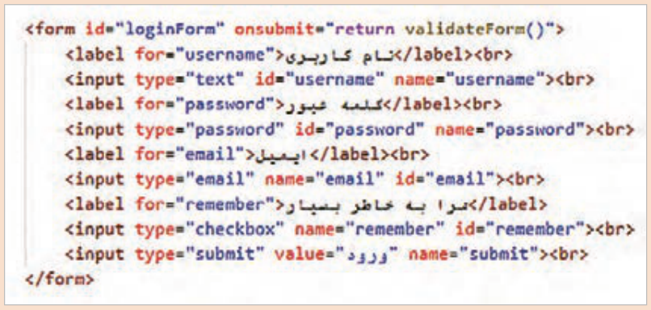
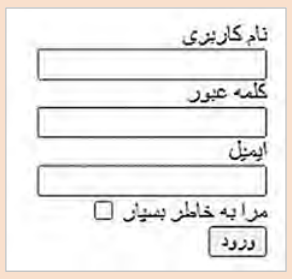
این فرم حاوی سه فیلد برای دریافت نام کاربری، کلمه عبور و ایمیل است .
صفحه ۲۳۰
بیشتر بدانید (ادامه)
برای اعتبارسنجی فرم از اسکریپت شکل زیر استفاده کنید. این اسکریپت حاوی تابع validateForm() است که مقدار ورودی فیلدهای متنی را بررسی میکند. این تابع در رویداد onsubmit فرم صفحه قبل فراخوانی میشود.
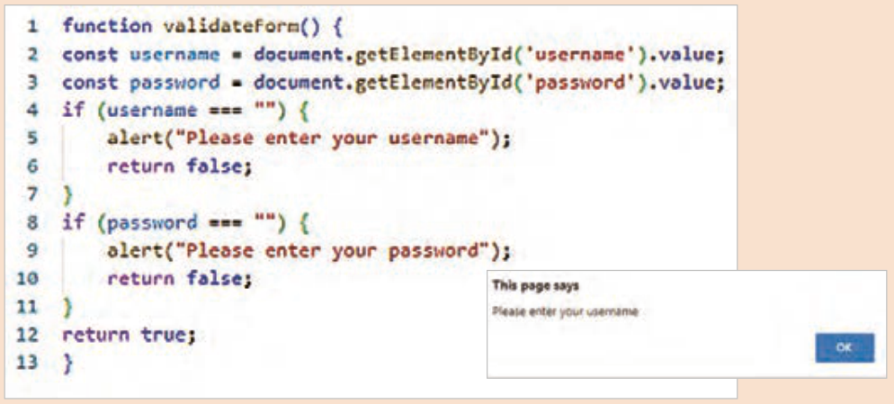
تابع validateForm() نام کاربری و کلمه عبور را در خط 2 و 3 دریافت میکند و مقدار آنها را درون دو متغیر username و password قرار میدهد. در خط 4 تا 7 خالی بودن username بررسی میشود، در صورت خالی بودن این متغیر، پیغام هشدار ظاهر میشود و دستور return false از ارسال محتوای فرم به سرور جلوگیری میکند. بهطور مشابه در خط 8 تا 11 خالی بودن متغیر password بررسی میگردد. در صورتیکه شرط if های خط 4 و 8 برقرار نباشد، دستور خط 12 اجرا میشود و اطلاعات فرم به سرور ارسال میشود.
در ادامه طول نام کاربری و کلمه عبور را بررسی کرده؛ بهطوریکه اگر طول هر یک از این دو فیلد کمتر از 6 کاراکتر باشد، پیغام هشدار نمایش داده شود. برای اینکار شرط زیر را بعد از خط 11 بنویسید.
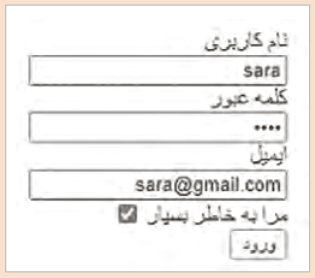
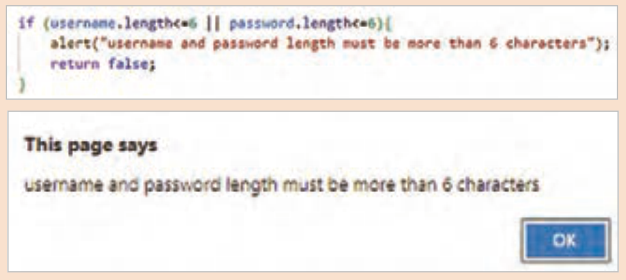
نکته
DOM پایه تمام وبسایتهای تعاملی است؛ تسلط بر آن یعنی قدم گذاشتن به دنیای حرفهای طراحی وب.
Page 225
Curiosity
Research why using the functions prompt() and confirm() for input operations can disturb the user experience.
Classes and objects
In programming languages, a class means a pattern for creating objects. A class contains a set of properties and methods. An object that is defined from a class will have the properties and methods defined in that class.
Learn more
In the following example a class titled Person is created that contains the properties name and age :
The constructor method is used to define and give values to the properties of an object. When a new object is created from a class, the constructor method is called automatically and assigns the initial values to the properties of that object. In the example above the constructor method accepts the two parameters name and age and assigns them to the matching properties in the object.
The class person has a method named greet that shows a message in the browser console.
The variable person1 is an object of the class person whose property values are amin and 47. This example shows that to create an object from a class the keyword new must be used. Considering that the class person has a method named greet, the object person1 can use this method too. The method greet will show the phrase "My name is amin and I am 47 years old" in the console.
Creating a class and an object
Create a new file named object.html and in it create a new class named Car with the properties auto_maker, model and year.
Write a method named print_Details to print the properties of the car. The printing form must be as follows: Auto maker: Toyota, Model: Camry, Year: 2020
Page 226
Learn more (continued)
Create an object with the values Toyota, Camry, 2020 and use the method print_details for the new object.
Reaching DOM elements
To do various operations on the elements of a page, JavaScript needs to reach those elements. That is why JavaScript has methods for reaching elements. For example, to reach an element with the id demo, the method getElementById is used as follows:
In this script the new value of the element para is given with the property textContent.
There are different ways to select and reach each of the page's elements, which are mentioned in this section.
Selecting by ID : the elements of the page are selected by their identifier (id).
Selecting by class : a set of elements with a given class name are selected.
Selecting by tag name : a set of elements with the same tag name are selected.
Figure 12 Figure 13 Page 227
Curiosity
To read about the other methods of reaching elements, search the phrase "how to get elements by JavaScript" on Google and open the site w3schools.com from the list of results.
Next, exercises are given for working on different elements of the page with JavaScript.
Workshop
Managing page elements with JavaScript
Reaching the content of elements, changing the content and the style of elements : write a script that changes the content and style of a button and a text element with JavaScript. These changes must happen when the button is clicked.
Create a file named product.html and enter the following code in the <body> section:
In lines 6 to 13 of the script above a function named change() is defined that reaches the elements addToCart and para and then changes their content and style. The function change() is called when the button is clicked.
In lines 7 and 8 the paragraph and the button elements are reached. In lines 9 and 10 the content of the paragraph and button elements is changed with the properties innerHTML and textContent. In lines 11 and 12 the style of the elements is changed with the style property. Save the file and check the result in the browser.
Learn more
Reaching elements and changing their properties : write a script that changes the src property of an image when the mouse is placed over it.
Page 228
Learn more (continued)
In the file products.html add the picture of a product to the <body> section. Then use the following script to change the value of the src property of the image.
Save the file and check the result in the browser.
When the mouse pointer is moved over the image, the onmouseover event is activated and as a result the function changeImage() is called to change the image. When the mouse moves away from the image, the onmouseleave event is activated and so the function resetImage() is called. This function brings back the original image.
In both functions above, the method setAttribute() is used to change the image.
Adding and removing elements with JavaScript : write a script that, when a button titled Consultation is clicked, adds a panel to the page to guide the user and closes it after a few seconds.
Create a new file named open-panel.html and write the script in it as in the figure opposite.
Page 229
Learn more (continued)
Add the style of the elements to the <head> section. Then save the file and see the result in the browser.
When the button "Consultation with a sales expert" is clicked, the function openPanel() is called. This function is written in lines 3 to 12.
In line 4 a new div element is created with the method createElement.
In line 5 the content of the element is set with the property InnerHTML.
The new element needs a style. This style is specified by the class consultpanel.
In line 6 the class name of the new element is set.
In line 7 the new element is added to the page with the method appendChild.
The consultation panel (the div element) is hidden by default. In line 8 the display state of the panel is changed to block.
In line 9 the method setTimeout is used to set the time for removing the consultation panel.
In line 9 the consultation panel is removed after 5 seconds by the method remove.
Reaching the form information and validating the user's data : write a simple script to validate the user's input data. In this validation, check that the text fields are filled, so that if a text field is empty, a warning message is shown.
Create a file named sign-in.html and enter the code of the following figure in it:
This form contains three fields to receive the username, the password and the email .
Page 230
Learn more (continued)
To validate the form use the script of the following figure. This script contains the function validateForm(), which checks the input value of the text fields. This function is called in the onsubmit event of the form on the previous page.
The function validateForm() receives the username and password in lines 2 and 3 and puts their values in the two variables username and password. In lines 4 to 7 it is checked whether username is empty; if this variable is empty, a warning message appears and the statement return false prevents the form's content from being sent to the server. Similarly in lines 8 to 11 it is checked whether the variable password is empty. If the conditions of the ifs in lines 4 and 8 do not hold, the statement of line 12 runs and the form's information is sent to the server.
Next, check the length of the username and the password; so that if the length of either of these two fields is less than 6 characters, a warning message is shown. For this write the following condition after line 11.
Note
The DOM is the foundation of all interactive websites; mastering it means stepping into the professional world of web design.